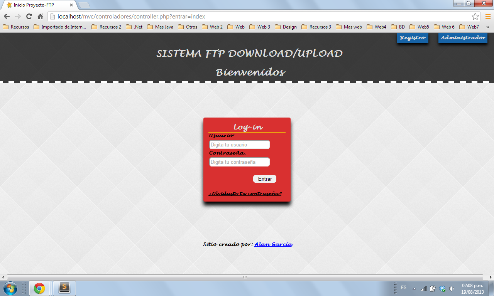
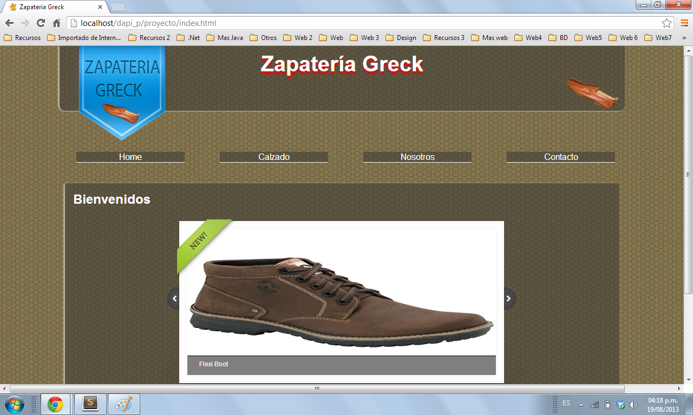

portafolio
Página Upload/Download

Este página está desarrollado con el patrón de diseño Modelo-Vista-Controlador (MVC).
Permite a los docentes subir archivos para la comunidad de alumnos y a los alumnos descargarlos sabiendo de que materia es cada archivo
Usando el lenguaje PHP con clases así como estructura HTML5 con CSS, también añadimos algunas cosas con la librería jQuery de Javascript para usar AJAX y un SGBD como MYSQL .
Zapatería Greck
Esta página esta desarrollada con estructura HTML5 y CSS3 así como con jQuery para algunas llamadas usando AJAX utilizando un SGBD como MYSQL.